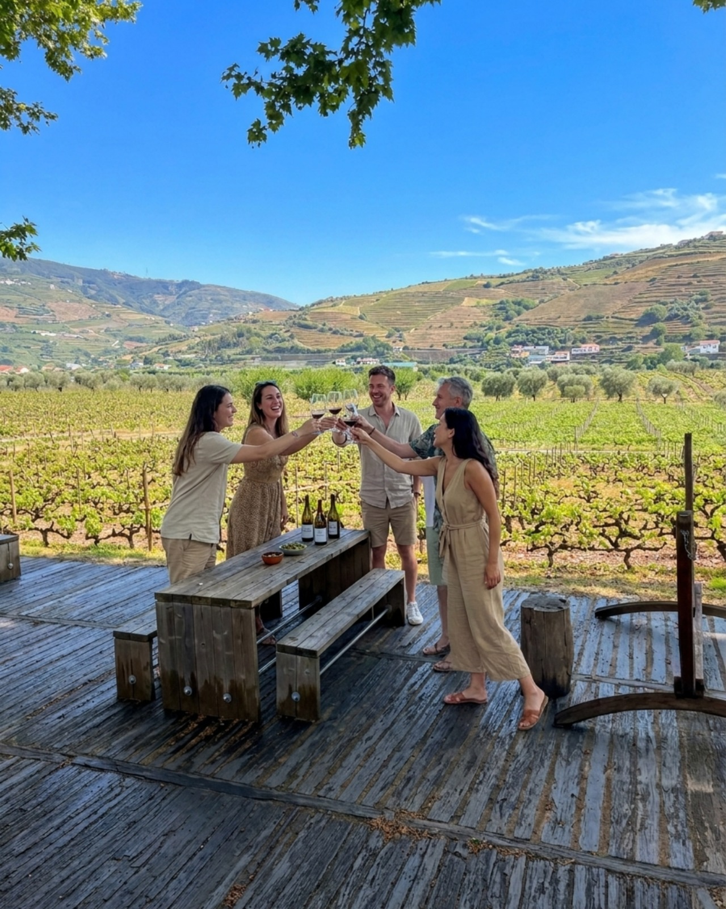

Exclusivo · 8 Horas
Quinta Privada & Cruzeiro em Barco Rabelo
Degustação vintage guiada por sommelier particular, almoço harmonizado à beira-rio e navegação privativa pelas encostas protegidas pela UNESCO.
Alterne entre os dois modos abaixo e passe o rato sobre os botões e os cartões para sentir a diferença de velocidade, precisão e elegância no seu próprio ecrã.

Degustação vintage guiada por sommelier particular, almoço harmonizado à beira-rio e navegação privativa pelas encostas protegidas pela UNESCO.
Motorista de topo bilingue, conforto absoluto e liberdade de itinerário personalizado entre o Porto, Douro e os melhores hotéis de charme.